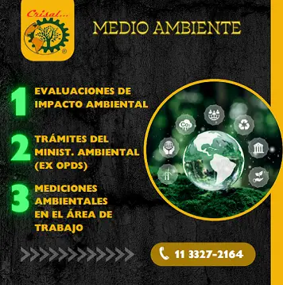
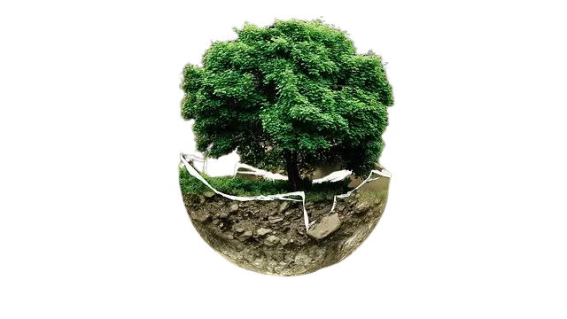
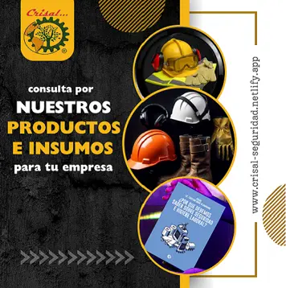
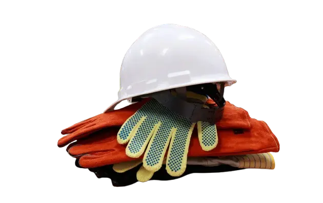

mediciones de ruido, iluminación, puesta a tierra, evaluaciones ASP
Las mediciones de ruido en los puestos de trabajo aseguran que se cumplan las normativas para proteger la audición de los trabajadores. Por su parte, las mediciones de iluminación previnienen la fatiga visual y evitan efectos estroboscópicos. La puesta a tierra y la continuidad de las masas garantizan la seguridad eléctrica, mientras que las evaluaciones ASP controlan los riesgos físicos asociados a equipos eléctricos sometidos a presión.
Superintendencia de riesgos de trabajo leyes y reglamentos
 Superintendencia de Riesgos del Trabajo
Conocé más acerca de la medición de ruido en: Superintendencia de Riesgos del Trabajo - Mediciones de ruido
Conocé más acerca de la medición de la iluminación en: Superintendencia de Riesgos del Trabajo - Mediciones de iluminación
Conocé más acerca de la medición de puesta a tierra (PAT) en: Superintendencia de Riesgos del Trabajo - Mediciones de puesta a tierra
Insumos antiparras cascos guantes borcegos arnés protectores visuales y auditivos chalecos refractarios
 productos de higiene y seguridad laboral, protección, insumos
En Crisal entendemos que la protección es clave para cada trabajador. Por eso, te ofrecemos los mejores productos en seguridad e higiene laboral. Desde antiparras, hasta cascos resistentes. También ofrecemos chalecos refractarios, protectores auditivos, botas y borcegos, arneses que garantizan tu seguridad a las alturas.
Conocé más acerca de nuestros productos en: Insumos